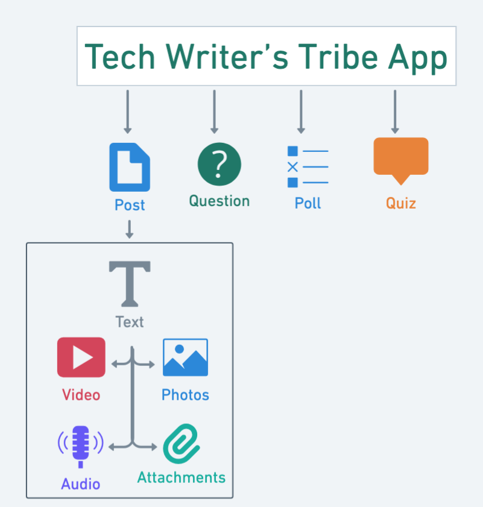

Tech Writer’s Tribe
Creating a Post - Quick Start Guide
Table of Contents
Overview
Tech Writer's Tribe (TWT) app is a social networking platform that allows technical writers to share posts, upload and download resources, ask questions, and engage in knowledge-sharing activities. This quick start guide describes how to create a post on Tech Writer’s Tribe (TWT) Android mobile app.
The following figure shows the types of posts available in the TWT mobile app.

Prerequisites
To create and share posts in the TWT mobile app, complete the following steps:
- Install the Tech Writer's Tribe (TWT) App
Download the app from Google Play Tech Writer's Tribe - Apps on Google Play
- Create an Account
Sign up with your email ID or mobile number to access all features.
- Set Up Your Profile (Recommended)
Add your name, email, location, interested topics, social media urls, and profile picture to enhance engagement with your posts.
Creating a Post
The Tech Writer’s Tribe (TWT) app allows you to create and share posts with the technical writer community. You can create the following types of posts in the TWT app.
- Text-only Post
- Share an Image
- Share a Video
- Post Audio
- Share a File
- Add a Question
- Create a Poll
- Create a Quiz
Create a Text-only Post
You can create only text as your post and share with the technical writer community.
To create,
- On your mobile, launch the TWT app.
- On the home page, at the bottom-right, Select (+).
- In the list, select Post.
- On the Share a Post screen, enter a text to post.
- On the top-right corner, select Add Tag.
- In the tag list, select the desired tag.
The TWT app attaches the selected tag to your post.
- On the top-right corner, select POST.
The text-only post is created.
Share an Image
You can share an image as your post with the technical writer community.
To share an image,
- On your mobile, launch the TWT app.
- On the home page, at the bottom-right, Select (+).
- In the list, select Post.
- On the Share a Post screen, select Photos.
- In your mobile gallery, select single or multiple images.
- Select Add.
The TWT app adds the selected image to your post.
- (Optional)On the Share a Post screen, enter a text to post.
- On the top-right corner, select Add Tag.
- In the tag list, select the desired tag.
The TWT app attaches the selected tag to your post.
- On the top-right corner, select POST.
An image post is created.
Share a Video
You can share a video as your post with the technical writer community.
To share a video,
- On your mobile, launch the TWT app.
- On the home page, at the bottom-right, Select (+).
- In the list, select Post.
- On the Share a Post screen, select Videos.
- In your mobile gallery, select a video.
The TWT app adds the selected video to your post.
- (Optional)On the Share a Post screen, enter a text to post.
- On the top-right corner, select Add Tag.
- In the tag list, select the desired tag.
The TWT app attaches the selected tag to your post.
- On the top-right corner, select POST.
A video post is created.
Post Audio
You can create an audio as a post and share with the technical writer community.
To post audio,
- On your mobile, launch the TWT app.
- On the home page, at the bottom-right, Select (+).
- In the list, select Post.
- On the Share a Post screen, select Audio.
- Allow the TWT app to record audio.
- Record your audio.
- Select STOP RECORDING.
The TWT app adds the audio file to your post.
- (Optional)On the Share a Post screen, enter a text to post.
- On the top-right corner, select Add Tag.
- In the tag list, select the desired tag.
The TWT app attaches the selected tag to your post.
- On the top-right corner, select POST.
An audio post is created.
Share a File
You can add audio files, video files, and other documents to your posts and share them with the technical writer community.
To share a file,
- On your mobile, launch the TWT app.
- On the home page, at the bottom-right, Select (+).
- In the list, select Post.
- On the Share a Post screen, select Documents.
- Select the file to upload from the available options.
The TWT app adds the selected file to your post.
- (Optional)On the Share a Post screen, enter a text to post.
- On the top-right corner, select Add Tag.
- In the tag list, select the desired tag.
The TWT app attaches the selected tag to your post.
- On the top-right corner, select POST.
A post is created with the selected file.
Add a Question
You can ask a question to the technical writer community.
To add a question,
- On your mobile, launch the TWT app.
- On the home page, at the bottom-right, Select (+).
- In the list, select Question.
The TWT app displays the Share a Question screen.
- In the Question box, enter a question.
- On the top-right corner, select Add Tag.
- In the tag list, select the desired tag.
The TWT app attaches the selected tag to your question.
- Select Post Question.
The question is created. Now, you can view the responses when others answer your question.
Create a Poll
You can create a poll to seek views about a topic with other users.
To create,
- On your mobile, launch the TWT app.
- On the home page, at the bottom-right, Select (+).
- In the list, select Poll.
The TWT app displays the Share a Poll screen.
- In the Question box, enter a question.
- In the Options box, enter the options.
Note: To add more than two options, select + Add more.
- In the Expires In box, select expiry days from the drop-down list.
- On the top-right corner, select Add Tag.
- In the tag list, select the desired tag.
The TWT app attaches the selected tag to your poll.
- Select Post Poll.
The poll is created. You can view the responses when others participate in your poll.
Create a Quiz
You can create a post as a quiz to test the knowledge of other users.
To create,
- On your mobile, launch the TWT app.
- On the home page, at the bottom-right, Select (+).
- In the list, select Quiz.
The TWT app displays the Share a Quiz screen.
- In the Question box, enter a question.
- In the Options box, enter the options.
Note: To add more than two options, select + Add more.
- In the Answer box, select the correct answer from the drop-down list.
- In the Expires In box, select expiry days from the drop-down list.
- On the top-right corner, select Add Tag.
- In the tag list, select the desired tag.
The TWT app attaches the selected tag to your quiz.
- Select Post Quiz.
The Quiz is created. Now, you can view the responses when others answer your quiz.
Frequently Asked Questions
-
Can I edit or remove a tag after posting?
Currently, you cannot edit tags after posting. However, you can delete the post and create a new one with the correct tags.
-
Is there a limit to the number of tags I can use per post?
Yes, you can attach up to 3 tags per post.
-
Can I create custom tags?
At the moment, you can only select from predefined tags.